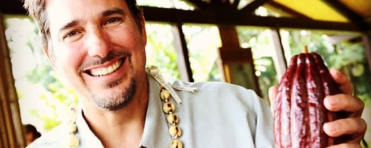
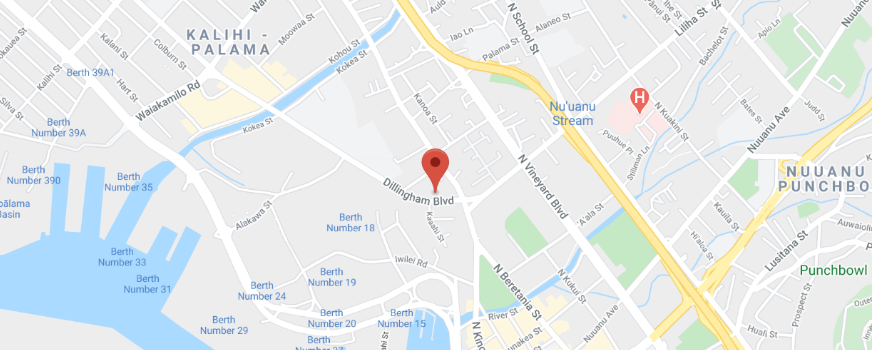

About Us
Madre co-founder Nat Bletter calls making chocolate “applied ethnobotany. What the heck does the professor mean by that?
“If you start talking to someone in tongues in Latin, throwing the scientific names of plants at them, their eyes are going to glaze over,” he explained. “But if you give them a bar of chocolate, maybe they’ll remember it more.”
That’s especially true for Hawaiian cocoa, which will surprise anyone who thinks they know what chocolate tastes like. Think pineapple, watermelon, raisin, all of which come in clear to amateurs as well as experts. Hawaii is the only state in the U.S. where cacao can grow, and because it’s an island ecosystem, “you have all these pockets of different flavors,” Nat explained, because of the varying weather systems. “They say if you don’t like the weather in Hawaii you can just go to the next valley and it’ll be different. The same is true of the flavor of the cacao.”

Of course, cacao isn’t native to Hawaii. Back in the 1850s German physician William Hillebrand brought it to the island and planted it in what’s now the Foster Botanical Garden in Honolulu to see how it grew. However, no one attempted to make chocolate from the plant in Hawaii for almost 100 years. Now it’s a different story. Bean-to-bar makers have cropped up all over the islands, mostly calling their chocolate “tree to bar.” That means they take “bean to bar” one step further: They grow the cacao themselves as well as ferment, dry, roast, grind, and smoothen it into chocolate.
Madre started out on a different path, though. After getting his PhD in ethnobotany, teaching at the University of Hawaii, and making chocolate at home, Nat decided to take the plunge. In 2010 he co-founded the company with friend and colleague David Elliott; because they were in Hawaii, the two decided to focus on (duh) Hawaiian cocoa. Nat and Dave wanted to perfect the chocolate-making process before they started growing plants and processing cacao. They make amazing single-origin bars as well as unusual inclusions like passionfruit, coconut milk and caramelized ginger, and triple cacao (ground and refined beans with cacao fruit pulp and roasted nibs), many of which have won awards.
But now they’re ready. They recently started growing cacao on their own farm, and they’ve been fermenting beans for farmers for a few years. Nat even calls Madre “the epicenter for cacao processing in Hawaii.”
“Understanding the ferment has really honed our craft,” he said, “because it adds at least three-fourths of the flavor to the finished chocolate. The farmer should get most of the credit for the flavor of the chocolate, and most chocolate makers have been trying to take so much of the credit for what they do.” It’s the first time in history that one place has been home to cacao farmers, chocolate makers, and research universities like the University of Hawaii. That means that in Hawaii, they’ve been able to “close the design loop of cacao processing and create a rapid design cycle.” In other words, farmers can get feedback on their fermenting process immediately instead of having to wait a year or more (until the cocoa has been shipped to makers in other countries and turned into chocolate). Madre is sharing their knowledge too: They’ve visited the Dominican Republic, the Solomon Islands, and Malaysia to help farmers learn how to ferment cacao correctly and therefore be able to charge a better price for their product, anywhere from two to four times as much. They’re planning to do the same thing in the Philippines, Haiti, and Vietnam.
For Nate, “applied ethnobotany” means more than just cacao, though. He’s planted a 2,000-square foot garden outside their shop in Honolulu where they grow almost every plant they use in their chocolate: sugar, vanilla, coffee, passionfruit, ginger, rosita de cacao, hibiscus. And they’ve just opened a café in that same location [tk this hasn’t happened yet] where they serve traditional Central American chocolate drinks like champurrado and bu’pu (a Oaxacan beverage made with Plumeria flowers). “We try to give cacao seeds and seedlings to everyone who comes to our shop who lives in Hawaii,” Nat said. “We’re calling ourselves Johnny Cacao Seed.”

Madre Chocolate
590A Dillingham Boulevard
Honolulu, Hawaii 96817, US
2126770222
sales@madrechocolate.com
Get directions
Monday To Saturday 3:00 pm - 8:00 pm
Sunday Closed